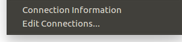
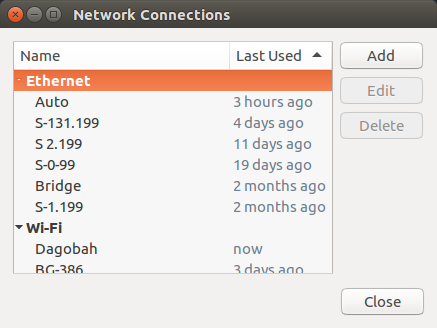

Spot ROS Driver Usage¶
Verify the URDF¶
To verify that the spot_viz and spot_description packages are sourced properly, you can run
roslaunch spot_viz view_model.launch
This will load RVIZ with the robot description visible. It should also show any additions you may have added to the robot’s URDF

Configure Your Networking¶
There are multiple ways that you can setup networking on your ROS computer. This guide will cover two different common ways to do this
/etc/network/interfaces¶
The first way is by editing /etc/network/interfaces. Below is a section that will create a bridge between all of your network ports and assign a static address of 192.168.131.1. This is a common setup for Clearpath robots. Ensure to put your ROS computer into the same subnet that you set for the Spot platform.
auto br0
iface br0 inet static
bridge_ports regex (eth.*)|(en.*)
address 192.168.131.1
netmask 255.255.255.0
bridge_maxwait 0
Network Manager¶
If you are using Ubuntu and it has a desktop environment, it will likely have Network Manager installed. To create a new network connection, click the networking icon in the top right if your screen and choose Edit Connections.
You will see all of the other network connections you’ve setup in the past. Click Add on the right to create a new network connection for the robot.
Select Ethernet as the connection type since we are connecting directly to the platform.

Give the connection a name.

Set the conneciton method to Manual. This will give it a static address.

Under the IPV4 config, choose a static address for the ROS computer. Ensure to put your ROS computer into the same subnet that you set for the Spot platform.

Running the Driver¶
roslaunch spot_driver driver.launch
When launching, there are some options you may need to configure for your setup. They are:
| Argument | Default | Description |
|---|---|---|
| username | dummyusername | Use this username to authenticate with spot |
| password | dummypassword | Use this password to authenticate with spot |
| hostname | 192.168.50.3 | The IP address at which spot can be found |
| estop_timeout | 9.0 | Time allowed before rpc commands will time out. Comms between the robot and driver are checked at a rate of 1/3 of this time. If comms are down, a gentle estop will trigger |
View the Robot¶
Once the robot is connected, you should be able to visualize its odometry, joint positions, camera streams, etc. using RVIZ. To view these streams, run
roslaunch spot_viz view_robot.launch
Remember that you will need to source your workspace before running this command.
Once RVIZ is loaded, you should see something similar to this.

Taking Control of the Robot¶
To control Spot, you need to maintain control of the eStop and body lease, power on the drive motors, and command the robot to stand.
The easiest way to do this is through the rviz control panel included in view_robot.launch. You can add the panel to an rviz configuration with Panels>Add new panel and selecting spot_viz/SpotControlPanel.

Body and eStop Control¶
A body lease gives the holder the ability to command the spot to make actions in the world. The eStop gives the robot a way to guarantee that the commanding system is maintaining contact with the robot. There are two ways to claim a body lease and eStop using this driver.
- Automatically when the driver starts by enabling the
auto_claimvariable - By calling the
/spot/claimservice after the driver is started
You cannot claim a lease on the robot if something else already has a lease. This is for security reasons. Check the status/leases topic for information on current leases.
You can release the lease by calling the /spot/release service
The hard estop is at /spot/estop/hard this will kill power to the motors and must be released before you can send any commands to the robot. To release the estop, call /spot/estop/release. The robot will collapse.
The gentle estop is at /spot/estop/gentle. This only stops whatever the robot is doing and will not cause a collapse. This stop does not have to be released.
You can perform all of the estops by using the rviz GUI as well.
Enable Motor Power¶
Motor power needs to be enabled once you have a Lease on the body. This can be done in two ways:
- Automatically when the driver starts by enabling the
auto_power_onvariable - By calling the
/spot/power_onservice after the driver is started
Stand the Robot Up¶
Once the motors are powered, stand the robot up so it is able to move through the world. This can be done in two ways:
- Automatically when the driver starts by enabling the
auto_standvariable - By calling the
/spot/standservice after the driver is started
Controling the Velocity¶
Warning
Spot will attempt to avoid any obstacles it detects with its cameras, but no vision or actuation system is perfect. Make sure to only move the robot in a safe area and in a controlled manner.
ROS Topics¶
To control Spot, you can send a Twist ROS message to command a velocity. To test this, open a new terminal and source your ROS installation. Then, run this command in your terminal
rostopic pub /spot/cmd_vel geometry_msgs/Twist "linear:
x: 0.0
y: 0.0
z: 0.0
angular:
x: 0.0
y: 0.0
z: 0.3" -r 10
That command will have spot rotate on the spot at 0.3 radians/second. Note the -r at the end of the command. That has ROS resend the message over again. If you don’t resend the message, the driver will assume a timeout and stop commanding motion of the robot.
Interactive Marker¶
Inside of RVIZ, grab the red arrow that is around Spot’s body and pull it forward or backwards to have Spot walk. If you rotate the blue circle around the body, Spot will turn on the spot. This is a very simple way to move Spot
Controlling the Body¶
ROS Topic¶
The angle of the body relative to the feet is also controllable through a ROS topic, but there is no interactive marker yet.
To control the body position through a terminal, send the following command:
rostopic pub /spot/body_pose geometry_msgs/Pose "position:
x: 0.0
y: 0.0
z: 0.0
orientation:
x: 0.0
y: 0.0
z: 0.0
w: 1.0"
The x and y components of the position are ignored. The z component sets the body height. The body height value is based on displacement from the neutral position.
Note that the -r is not needed for this command. This sets the position the body should be in until changed.
Actionserver¶
The actionserver /spot/pose_body can be called to set the body pose.
To test this, start an action client with
rosrun actionlib_tools axclient.py /spot/pose_body
You will see a window pop up, and you can specify the body pose with a Pose message, or by specifying roll, pitch and yaw, and a body height.
If using a pose message, you can control the body height by setting the z component of position. The x and y components of position are ignored. If the pose message is non-zero, any roll/pitch/yaw specification will be ignored.
If using the roll/pitch/yaw specification, enter values in degrees, and body height in metres. Body height is based on displacement from the neutral position.
If you send an empty message, the body pose will be reset to neutral.
Here is what the axclient window will look like:
body_pose:
position:
x: 0.0
y: 0.0
z: 0.0
orientation:
x: 0.0
y: 0.0
z: 0.0
w: 0.0
roll: 0
pitch: 0
yaw: 0
body_height: 0.0
Rviz¶
The spot control panel in rviz also provides a way of setting the body pose by providing roll, pitch and yaw.
Moving to a pose¶
ROS Topic¶
The /spot/go_to_pose topic can be used to move the robot by specifying a pose.
To test, you can send a pose to the topic as follows, to move the robot one metre forwards from its current location.
rostopic pub /spot/go_to_pose geometry_msgs/PoseStamped "header:
seq: 0
stamp:
secs: 0
nsecs: 0
frame_id: 'body'
pose:
position:
x: 1
y: 0.0
z: 0.0
orientation:
x: 0.0
y: 0.0
z: 0.0
w: 1"
Actionserver¶
The /spot/trajectory actionserver gives you a little more control than the ros topic, and will also give you information about success or failure.
Warning
If there is an obstacle along the trajectory the robot is trying to move along, it may fail as the trajectory command is different to the command that is used by the controller. In this case, the actionserver will return success despite not actually reaching the requested pose. As of 2021/09/10 the boston dynamics API does not appear to provide feedback which we can use to return failure when this happens.
In addition to the pose, you can specify duration, which specifies how long the command can run before timing out.
The precise_positioning can be used to request that the robot move more precisely to the specified pose. If set to false, the robot will move to “near” the specified pose. It’s not clear what exactly defines being “near” to the pose, but you should not expect to reach the pose precisely. The robot will end up within ~0.5m of the pose, and not make much effort to align to the orientation.
You can test the actionserver by using an action client
rosrun actionlib_tools axclient /spot/trajectory
And fill in the values as you like.
Rviz¶
You can connect the 2d nav goal tool to publish to the /spot/go_to_pose topic. The default rviz config provided with
roslaunch spot_viz view_robot.launch
Already has the tool configured, but you can also do this by right clicking the toolbar, selecting tool properties, then changing the nav goal topic to /spot/go_to_pose.
Setting velocity limits¶
You can set a velocity limit in m/s for the motion to poses using the /spot/velocity_limit service:
rosservice call /spot/velocity_limit "velocity_limit:
linear:
x: 0.0
y: 0.0
z: 0.0
angular:
x: 0.0
y: 0.0
z: 0.0"
Only the x and y components of linear velocity are considered, and the z component of angular.
Cameras and Depth Clouds¶
Spot is equipped 5 RGB and depth-sensing cameras: 2 on the front, one on each side, and one in the rear. All of these cameras publish at approximately 10Hz. The cameras are grayscale.
Note that the front cameras are mounted sideways, so they have a narrower horizontal FoV, but a larger vertical one. The camera data likewise rotated anticlockwise by 90 degrees.
The frontleft camera and depth topics are from the camera physically located on the front-left of the robot.
This camera is pointed to the robot’s right, so the depth cloud will appear in front of the robot’s right shoulder:

Similarly the frontright camera and depth topics are from the camera physically located on the front-right of the
robot. This camera points to the robot’s left, so the depth cloud will appear in front of the robot’s left shoulder:

The complete list of depth and camera topics is below:
| Topic | Type | Comments |
|---|---|---|
| camera/frontleft/camera/image | Image | Data from the front-left camera, which points to the right. Image is rotated 90 degrees anticlockwise. |
| camera/frontright/camera/image | Image | Data from the front-right camera, which points to the left. Image is rotated 90 degrees anticlockwise. |
| camera/left/camera/image | Image | |
| camera/right/camera/image | Image | |
| camera/back/camera/image | Image | |
| depth/frontleft/camera/image | Image | Data from the front-left camera, which points to the right. |
| depth/frontright/camera/image | Image | Data from the front-right camera, which points to the left. |
| depth/left/camera/image | Image | |
| depth/right/camera/image | Image | |
| depth/back/camera/image | Image |
Monitoring the Platform¶
| Topic | Type | Description |
|---|---|---|
| status/metrics | Metrics | General metrics for the system like distance walked |
| status/leases | LeaseArray | A list of what leases are held on the system |
| odometry/twist | TwistWithCovarianceStamped | The estimated ofometry of the platform |
| status/feet | FootStateArray | The status and position of each foot |
| status/estop | EStopStateArray | The status of the eStop system |
| status/wifi | WiFiState | Status of the wifi system |
| status/power_state | PowerState | General power information |
| status/battery_states | BatteryStateArray | Information for the battery and all cells in the system |
| status/behavior_faults | BehaviorFaultState | A listing of behavior faults in the system |
| status/system_faults | SystemFaultState | A listing of system faults in the system |
| status/feedback | Feedback | Feedback from the Spot robot |
Troubleshooting¶
These instructions are a minimum subset of instructions to get this driver working and do not contain all necessary debugging steps. Please refer to the Spot SDK Quickstart for more detailed debugging steps.